弹出列表收成一套：改前改后
w00029 t04。六个弹出列表（DropdownMenu、Select、Menubar、右键菜单、QuickPick、Composer 的候选菜单）改用同一行外观、同一套截断与滚动；新增不抢焦点的候选菜单 SuggestionMenu，Composer 改用它。都是 Lab 里的真实组件，nbook 主题、浅色、900px 画布；左边改前（改动前的 master），右边改后。
按评审板的决定：高亮中性叠色（决定 1）、选中只画左侧的勾（决定 2）、外框 10px 内边距 4px 项 5px（决定 3）、28px 行高 13px 字（决定 4）、最多 8 项半（决定 5）、候选菜单不要按键提示（决定 6）、同一级有一项带图标就每项留出图标列（决定 7）；人工审查后改为勾与图标共用左侧一列（决定 8）、说明放进同一行、所有项一样高（决定 9）。
1. 下拉菜单
行高从 32px 收到 28px，字从 12px 到 13px，项与项之间不再留 2px 缝；外框圆角 8px 改 10px、内边距 6px 改 4px。危险项只有文字与图标是红色，高亮时底色与其它项一样。
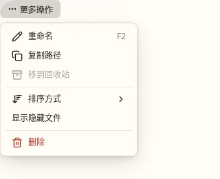
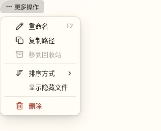
2. 勾选项
新加的 Lab 场景“勾选项与快捷键”：勾在左侧一列，右侧照常显示快捷键（原来勾选项会把快捷键挤掉）。
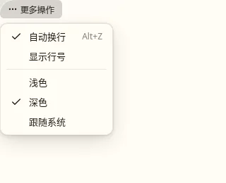
3. 长列表
原来按 26px 或 32px 乘出约 6 项半；现在按真实盒子量，截在第 9 项中间，露出半项提示还能往下滚，所有弹出列表都一样。
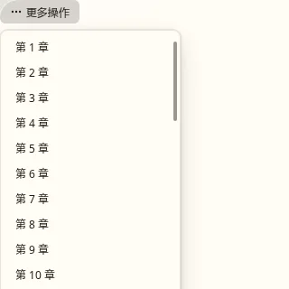
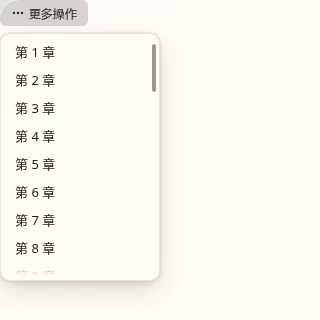
4. 选择器（Select）
选中项原来是右侧蓝勾、强调色淡底与加粗；现在选中项在左侧一列画勾（替代它的图标），底色不变，高亮跟着指针或键盘走。说明放在同一行右侧的灰色小字，放不下时先截说明，所有项一样高。打开时停在选中项上。
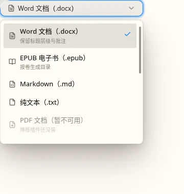
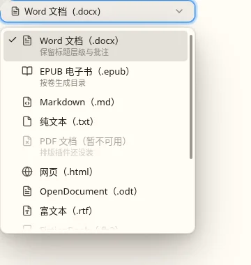
5. 菜单栏
一级菜单与子菜单的项用同一行外观；子菜单里的项原来悬停没有高亮，现在有。子菜单原来跟着菜单栏定位，偏了一百多像素（菜单栏的模糊效果成了它的定位基准），现在按窗口定位。
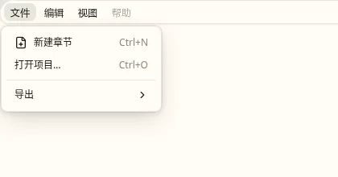
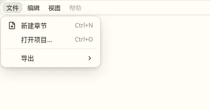
6. 右键菜单
原来项悬停与方向键都没有高亮；子菜单也是偏开的（同第 5 节的原因），这里改前的子菜单落在了右下角。现在悬停、方向键都只亮一项，展开了子菜单的父项保持高亮，子菜单第一项与父项同一行。
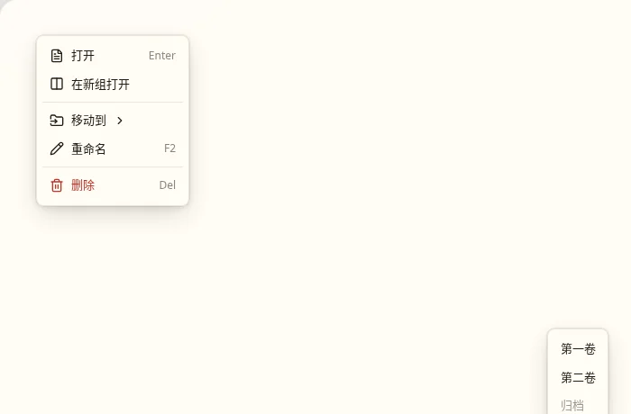
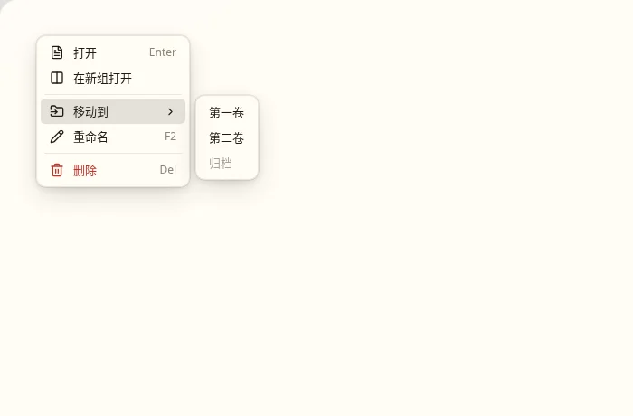
7. 命令面板（QuickPick）
外框取菜单的圆角与内边距（原来自己写 14px）；项同样 28px 一行，分类与说明放在同一行右侧；列表最多 8 项半，滑块与顶底渐隐和其它列表一样。
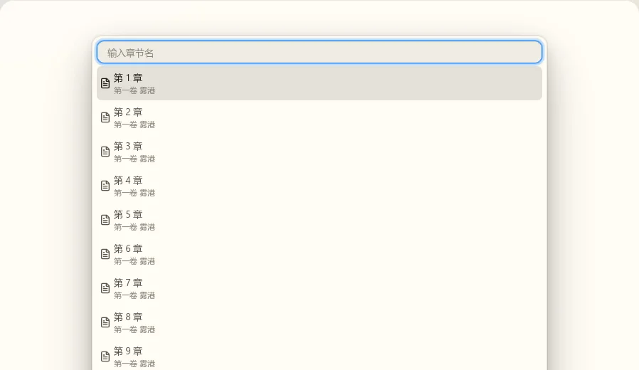
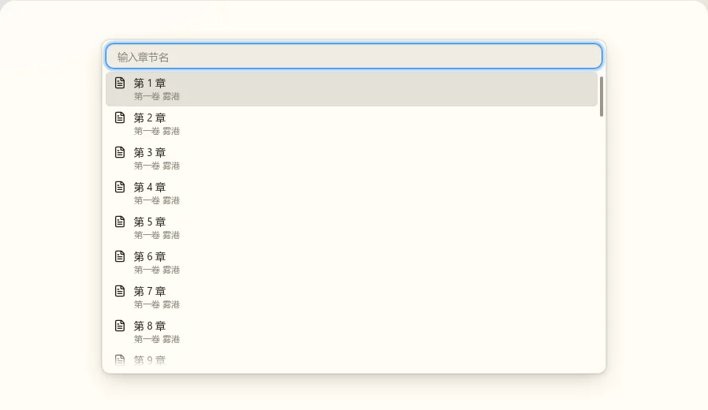
8. Composer 的候选菜单 → SuggestionMenu
原来的 PromptMenuPanel 自画外框、用强调色淡底高亮、底部一行按键提示；现在是 nb-ui 的 SuggestionMenu：菜单外框、中性高亮、没有按键提示。它可以贴着输入框（Composer 的用法：与外框同宽、固定在上方或下方），也可以贴着光标（编辑器的斜杠菜单将要用）：光标移动时逐帧跟上，下方不足 96px 且上方更宽时翻到上方，左右夹进窗口。焦点始终留在输入处。
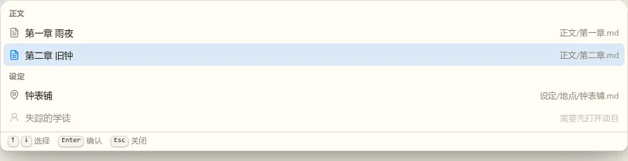
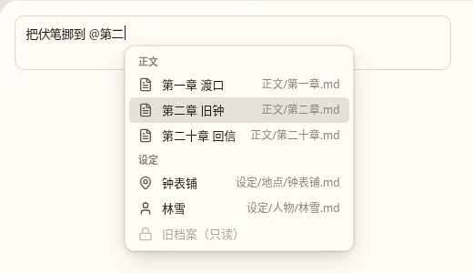
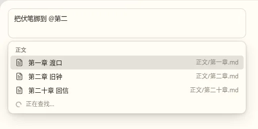
9. 其它主题与窄屏（改后）
macOS 主题外框 12px、内边距 6px，项的圆角同样推出 5px；深色与 390px 窄屏下结构不变。全套截图（两个主题 × 浅色、深色 × 900px、390px，改前改后各一份）在本地 .local/agent/works/w00029-nb-ui-cleanup/tasks/t04-popup-lists/shots/。
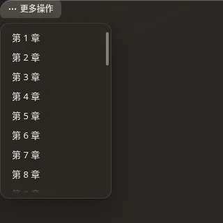
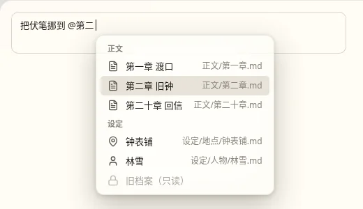
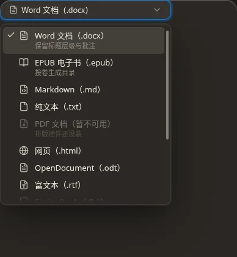
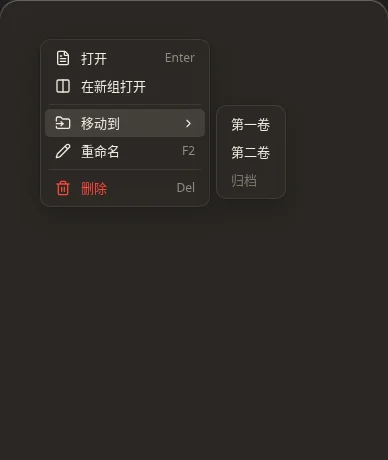
10. 留意的地方
- 原来设了
compact的 9 处菜单（nb-story 顶栏、编辑器面包屑、活动栏“更多”、移动视图、标题栏动作、标签页“更多”等）项变高 2px，最小宽度统一为 160px（原来普通档 200px）。编辑器面包屑的两个下拉原来最高 320px（约 11 项），现在最多 8 项半。 - 左侧一列（决定 7、8）：勾与图标共用这一列，同一级里有的项带图标、有的不带时，不带的留空，名称对齐（第 1 节的“显示隐藏文件”、第 5 节的“打开项目…”）。行高（决定 9）：说明不再占第二行，六个列表所有项都是 28px。顺带修掉一处：应用里图标类的
width: 1em盖掉了菜单项图标的 16px，图标实际只有 13px；现在都是 16px。